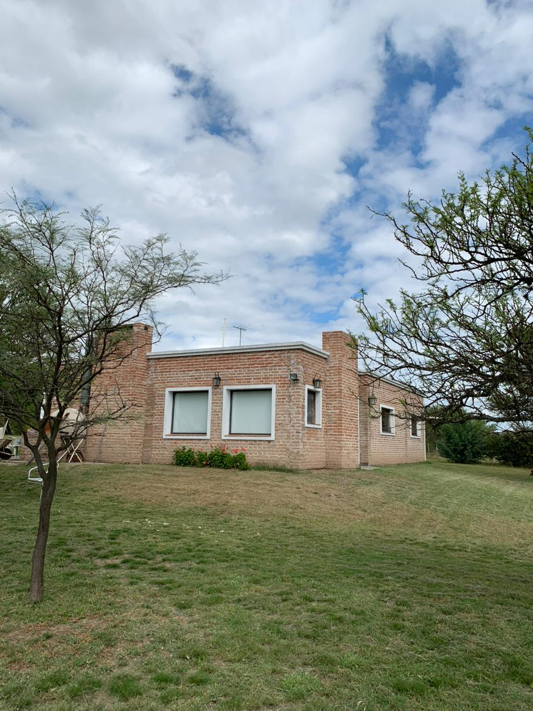
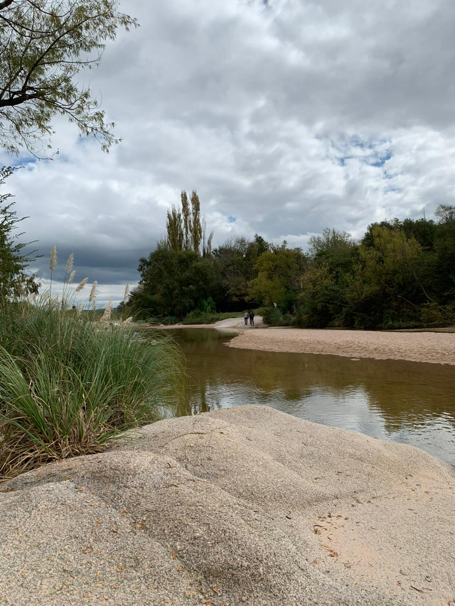
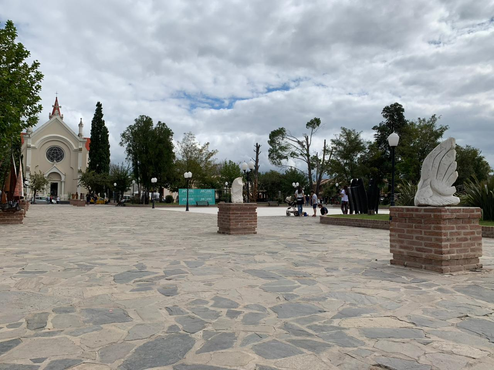
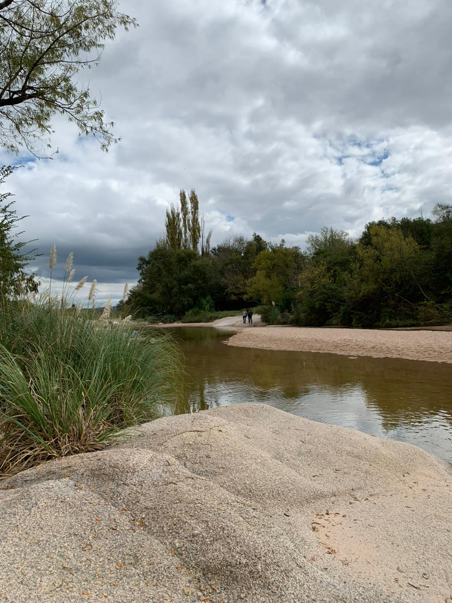
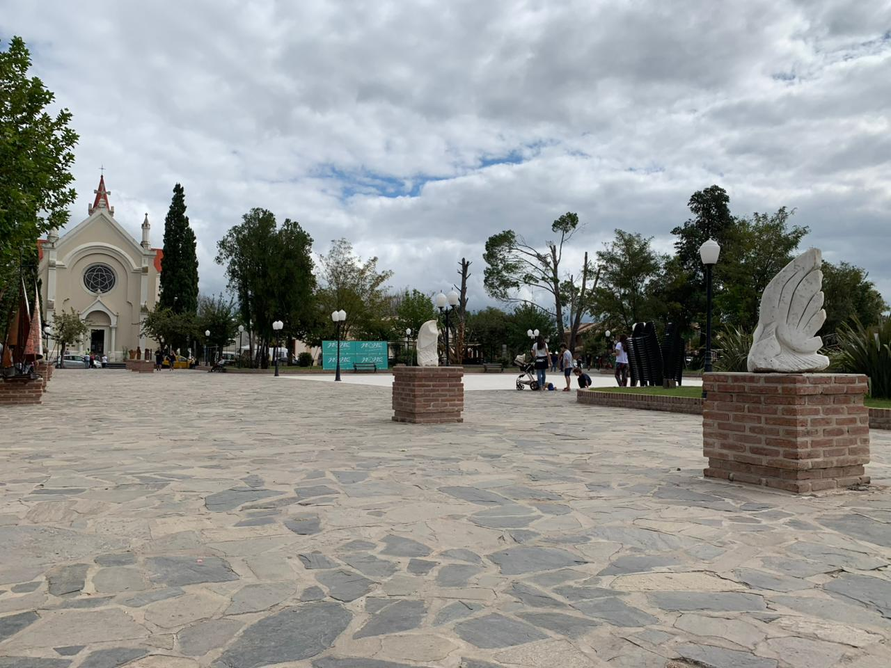

El refugio
Un lugar para volver
a respirar
La Escondida es una casa de campo en ladrillo a la vista, con carácter y encanto serrano, ubicada en las afueras de Nono, en el Valle de Traslasierra. Con pileta privada, amplio jardín verde y vistas panorámicas a las sierras, es el lugar perfecto para desconectarse de verdad.
Ideal para familias, parejas o grupos de amigos que buscan naturaleza, silencio y el ritmo tranquilo de las sierras. A pocos minutos del río y a 10 km de Mina Clavero.


 


